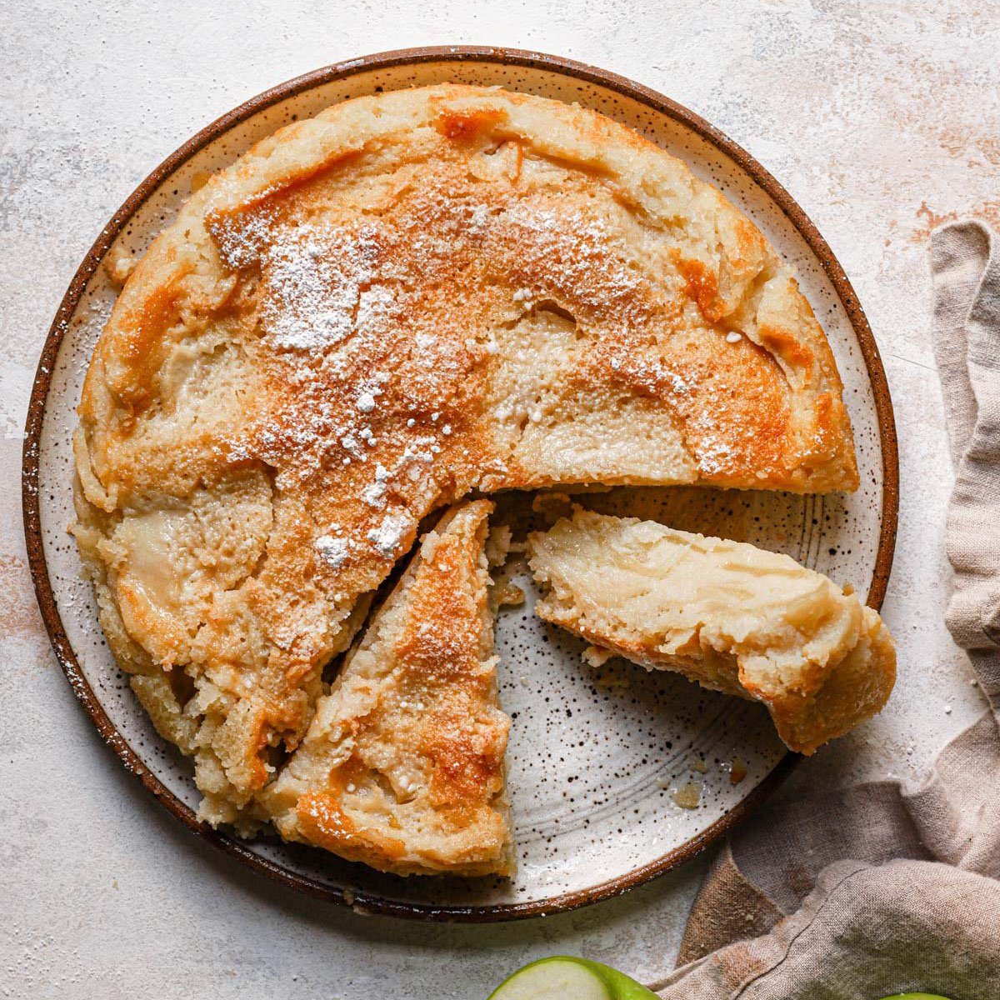

French Apple Cake

Description
This French Apple Cake is incredibly delicious. France is famous for its fabulously
fancy pastries and baked goods, so you might get some skeptic looks when you tell them that
this is your favorite apple cake - but trust me - this simple, rustic, easy to make cake is
absolutely amazing.
Ingredients
- 3 large baking apples (such as Honeycrisp)
- 2 teaspoons of apple cider vinegar
- 1 stick of unsalted butter
- A cup of sugar
- 2 large eggs
- 1/2 teaspoon of vanilla extract
Recipe Instructions
- Pre heat the oven to 175 degrees C
- Peel apples and cut them into cubes, add them to a bowl with apple cider
- Add the sugar, butter, eggs and vanilla extract to a bowl and beat it to make the cake dough
- Add the apples to the cake dough
- Shape the cake
- Bake in oven for 45 minutes
- Sprinkle more sugar on top after baking is done
Back to top
Back to main page